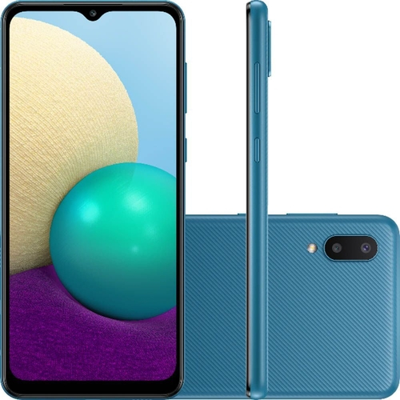
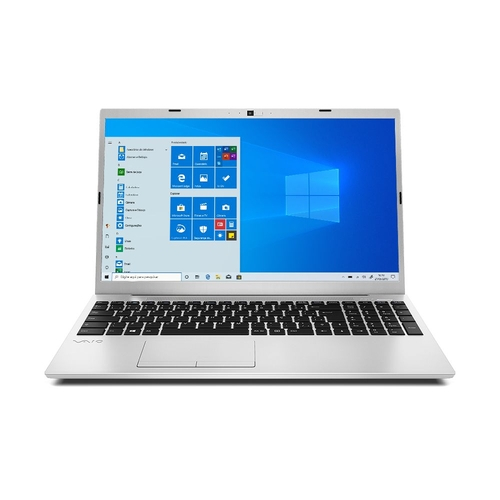

SMART TV, Navegador (Web Browser), Espelhamento do Smartphone para TV, DLNA, Bluetooth Low Energy, WiFi Direct, Som da TV para smartphone, Acessibilidade - Guia de Voz (Inglês - EUA, Português - Brasil), Ampliar, Aumento de Contraste, Aprenda a mexer no Controle Remoto da TV (Inglês - EUA, Áudio de múltiplas saídas, Cores negativas, Preto e Branco, Aprenda a mexer no Menu (Inglês - EUA, Zoom de vídeo, Digital Clean View, Busca automática de canais, Desligamento Automático, Legenda, Connect Share (HDD), ConnectShare (USB 2.0), EPG, Game Mode Sim (Modo Game automático), Idioma (Local - Brasil - Português), Compatível com HID USB, IPv6 Support, MBR Support, Sensor Ecológico, Selo Procel ("A"), Digital Broadcasting (ISDB-T), Sintonizador Analógico (Trinorma), Data Broadcasting (GINGA)
Você precisa de um smartphone de ótima qualidade Desenvolvido com tecnologia, o Smartphone Samsung Galaxy A02 é um aparelho equipado com câmera dupla traseira, sendo a principal de 13MP, abertura de f/1.9 e uma macro de 2MP, para que você faça cliques incríveis. Além disso, conta com frontal de 5MP. Com design moderno e confortável para uso, sua tela é de 6.5 polegadas, resolução HD+ e tecnologia IPS LCD. Um dos diferenciais do Smartphone Samsung Galaxy A02 é a sua bateria de 5.000 mAh que tem capacidade para um melhor uso. Completo e com recursos que vão facilitar o seu dia a dia, esse smartphone da Samsung é ideal para quem não abre mão de ter funções fáceis de utilizar.
Experimente a performance de um processador que gerencia tarefas e interliga memórias mais rapidamente com menor consumo de energia. Com maior autonomia de bateria, maior potência, maior velocidade quando comparado aos modelos de 10ª geração Intel Core. Destaque para as placas gráficas Iris Xe (Core i5 e Core i7), situadas junto ao processador, mas com desempenho de placa dedicada.*